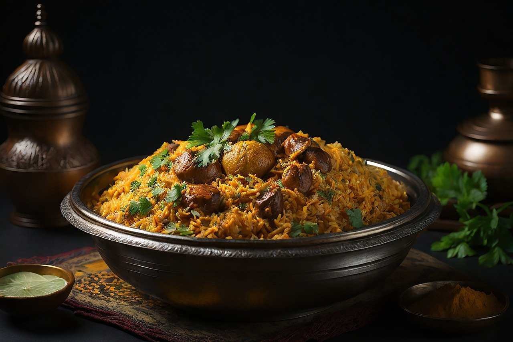
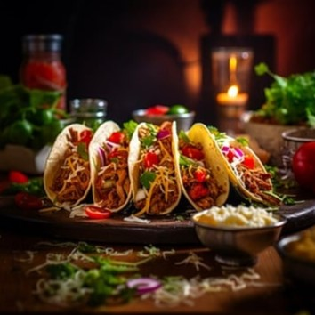
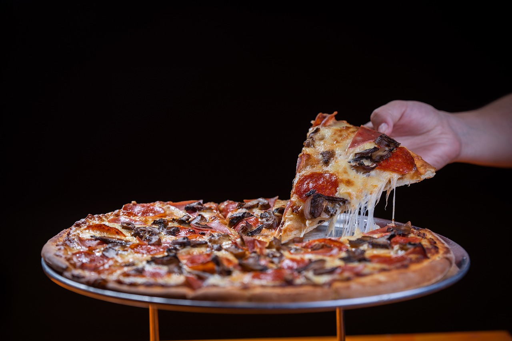

Welcome to Earn Restaurant, a modern, eco-friendly culinary haven offering an exclusively plant-based menu. We pride ourselves on our commitment to sustainability, sourcing organic, locally-grown ingredients for a truly ethical dining experience. Our diverse menu caters to all, featuring innovative vegan dishes that delight both the palate and the planet. Beyond the restaurant, our versatile catering services bring the essence of Earn to any event, with a range of vegan options suitable for every occasion. Experience the future of dining with us, where every meal is a step towards a greener world.
Earn's Green Burger
A plant-based patty that perfectly captures the essence of a classic burger. Served on a fresh, toasted bun and layered with crisp lettuce, juicy tomatoes, and our signature vegan sauce for an irresistible flavor. Accompanying the burger are our golden, oven-baked Potato Wedges, seasoned with a blend of herbs to offer a crunchy and satisfying side. A delightful treat for vegans and non-vegans alike!
Price: 9.95 Euro

Earn's Vegan Biryani
A symphony of aromatic spices and flavors. This classic Indian dish is masterfully crafted with layers of fragrant basmati rice, marinated with a rich blend of turmeric, cumin, and garam masala. Each spoonful reveals a medley of tender, slow-cooked vegetables like carrots, bell peppers, peas, and potatoes, all absorbing the essence of the herbs and spices. Infused with saffron and a hint of mint, our biryani offers a complex yet harmonious taste. Topped with caramelized onions and roasted cashews, it's a delightful fusion of textures and tastes, making every bite a celebration of vegan indulgence. Perfect for those who seek a plant-based feast without compromising on traditional flavors.
Price: 9.95 Euro

Earn's Green Tacos
Indulge in our Gourmet Vegan Tacos, a blend of luxury and plant-based goodness. Nestled in a soft, handmade tortilla is richly seasoned, slow-cooked jackfruit, mimicking traditional pulled meat. It's topped with crunchy red cabbage slaw, sweet mango salsa, and smoky roasted corn, all drizzled with a creamy avocado-lime sauce. This dish combines bold flavors and textures, offering a sumptuous vegan delight in every bite
Price: 9.95 Euro

Earn's Truffle Pizza
Savor the elegance of our Luxury Vegan Truffle Pizza, an exquisite fusion of gourmet flavors and plant-based ingredients. This pizza features a thin, crispy crust, expertly crafted with artisanal flour. Atop the crust lies a rich, savory truffle-infused tomato sauce, generously layered with a premium blend of vegan mozzarella. The star of the show is the delicate truffle slices, adding an earthy depth and luxurious aroma. Finished with a sprinkle of fresh arugula and a drizzle of truffle oil, this pizza is a true vegan indulgence for the sophisticated palate.